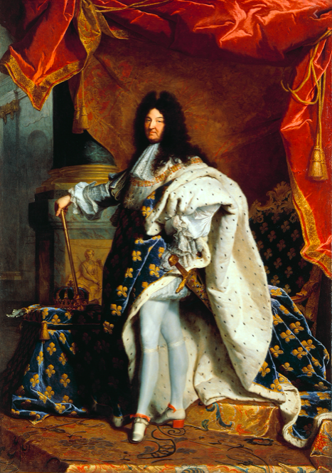
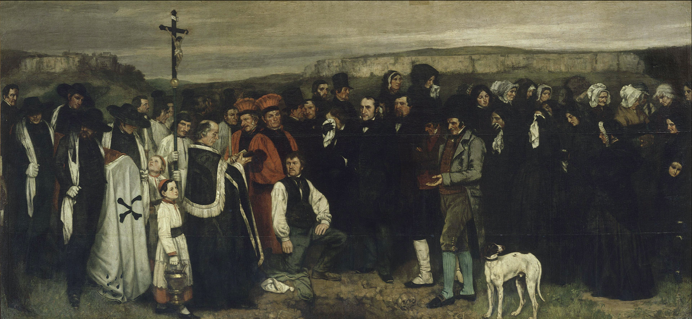
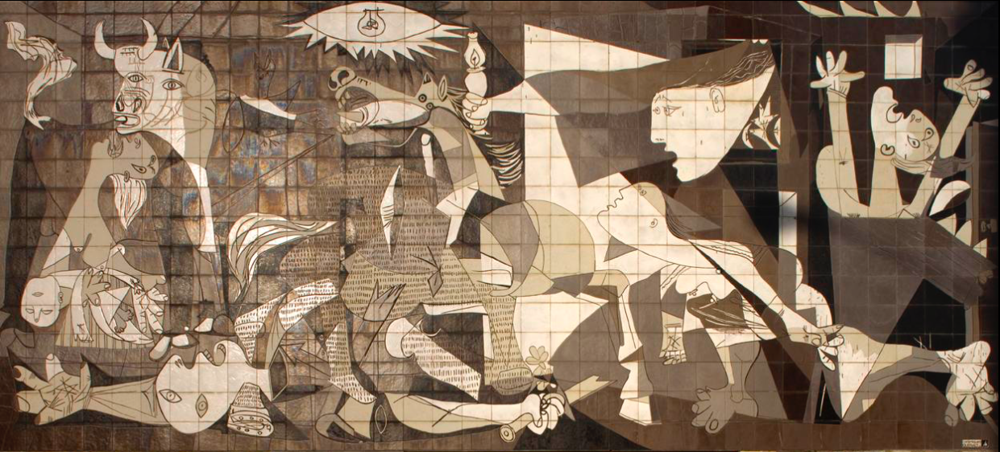

Présentation
En raison de son caractère sensible, et non logocentrique, il parle à tous et franchit les frontières de nation et de classe de sorte que le message dont il est porteur revêt la puissance politique dont même un dictateur ne parvient pas à jouir.
L’art objet de la politique : correspond alors à un champ d’activité et une classe d’objets sur lesquels s’exerce le pouvoir.
L’art sujet de la politique : la création artistique pourrait être emblématique des pratiques de citoyenneté en général et d’une vision du monde fondamentalement démocratique.
Première partie : l’art instrumentalisé
1. L’art comme service social
Art pour renforcer le pouvoir d’une chose existante, par exemple en le symbolisant, en lui apportant une riche ornementation, en la décorant, en la ritualisant, etc.
La séparation des œuvres d’art lorsqu’elles se trouvent placées dans des musées est un phénomène récent qui ne doit pas faire oublier que, dans l’immense majorité des cas, les œuvres d’art sont intimement reliées à la vie quotidienne et représentent une phase inséparable de la vie sociale.
Présence de l’art dans la vie normale : bâtiments publics tels les mairies, espaces publics urbains, lieux de cultes. Il atteste la puissance et illustre la grandeur. En même temps, il devient une pratique contrôlée qui prive les artistes du droit de définir les normes de leur travail.
2. L’exemple du peintre Rubens
Si la série Médicis a une ambition politique, elle n’en a aucune en termes de vérité historique, d’exactitude des faits, ou encore de neutralité. Au contraire, il semble qu’il faille voir en Rubens un artiste de la communication politique : « à l’aube de la communication politique moderne, Rubens en affronte le problème central : comment authentifier un récit historique parfaitement faux . Il y répond par des moyens purement picturaux, en substituant la vérité de la peinture à la vérité historique.
Cette histoire de Marie de Médicis est démentie dans les écrits de Richelieu. Au lieu que les faits authentifient le récit, c’est en fait la peinture qui va le porter et lui conférer une autorité.
3. L’exemple de Jean-Baptiste Colbert, père fondateur de la politique culturelle
Jean-Baptiste Colbert, ministre de Louis XIV qui modernise l’Etat, et a organisé le gouvernement absolu dans le domaine du commerce, de l’industrie et de l’agriculture, de la navigation et de l’administration, et aussi des arts et des sciences.
Parrain de l’académie royale de peinture, met les artistes au service du roi Louis XIV, réputé le protecteur des arts, et les place sous son contrôle.
C’est la couronne qui finance l’enseignement. L’institut est un lieu de réflexion sur l’art dans lequel les académiciens élaborent les règles de l’Art et du bon goût.
Avec Colbert se met en place une première « politique culturelle » avant la lettre dont les enjeux politiques sont clairement affirmés : encadrer la création elle-même en l’entourant de normes du bon goût incontestables. Naissance de l’académisme. L’académie s’entoure également de tout un système de promotion élitiste afin de filtrer les propositions, de sélectionner les meilleurs et de forger de la France une image unifiée qui puisse être exportée en dehors des frontières et briller à l’étranger. Il s’agit enfin, à l’intérieur, de consolider le pouvoir.
Contexte historique

Etant achevé, ce monarque le trouva d’une ressemblance si parfaite et si magnifiquement décoré qu’il lui ordonna d’en faire une copie de la même grandeur pour l’envoyer au roi d’Espagne à la place de l’original, qui fut placé à Versailles, dans la salle du trône. Le tableau fut présenté à Versailles en janvier 1702.
Analyse des images
Ce portrait est en fait un montage, réalisé à plusieurs mains dans l’atelier de Rigaud. La partie inférieure du corps – des jambes de jeune homme, gainées de soie, amorçant un pas de danse – et la partie supérieure : le visage réaliste d’un homme alors âgé de soixante-trois ans.
Vieil homme avec un corps de jeune homme, Louis XIV est entouré des insignes de la royauté : le collier de l’ordre du Saint-Esprit, le sceptre – tenu à l’envers, comme une canne ! – la couronne fermée, la main de justice, et il y apparait comme hors du temps, dans une sorte d’éternité.
Portrait syncrétique : « les deux corps du roi », correspond à la double nature de la souveraineté : le roi symbolique qui ne meurt jamais, et le roi physique.
4. La notion de politique culturelle
En France ministère de la culture créé en 1959 sous l’influence de Malraux et jouit d’un champ d’intervention élargi à partir de 1981 avec Jack Lang. La culture et ses produits sont pensés comme des auxiliaires du pouvoir, des modes de consolidations des institutions et des habitudes qui les sous-tendent, un ciment social.
Pour Malraux, l’essentiel dans un premier temps consiste en la patrimonialisation ou préservation du patrimoine. « Notre travail, c’est de faire aimer les génies de l’humanité et notamment ceux de la France, ce n’est pas de les faire connaître. »
Premièrement, l’art est supposé reposer sur l’amour, ce qui l’enferme dans une conception romantique fondée sur l’intensité de la perception, l’exercice d’un goût affirmé, l’exposition de soi à la force de l’art, la perméabilité de la sensibilité, l’attraction ou encore l’inclination.
Un premier trait commun aux politiques culturelles : l’amour de l’art trouve en lui-même son propre fondement. Il dépend des qualités propres à chacun en termes de réceptivité. Il est donc le propre d’une élite dont le milieu social est favorable au développement du bon goût et encline à suivre les normes esthétiques de son époque. Pierre Bourdieu, féroce critique de la conception de Malraux, dénoncera le caractère élitiste et anti-populaire de l’amour de l’art.
Le contact avec les œuvres d’art ne peut exercer une attraction (un amour) que sur les personnes déjà familiarisées avec elles et éduquées en ce sens.
Deuxièmement, « faire aimer les génies de l’humanité » : conception de l’art en phase avec l’essor d’une politique culturelle décentralisée, tendant à maîtriser les critères définissant ce qui est de l’art et ce qui n’en est pas, revendiquant ainsi un monopole en matière de goût et d’appréciation esthétique. Le génie désigne une supériorité évidente dans le domaine de la création dont le repérage et la patrimonialisation sont censés aller de soi. De fait, le génie et la compétence s’opposent.
Introduire le génie dans les raisonnements concernant les choix de politique culturelle conduit donc à enfermer reconnaissance et œuvres du génie dans une sphère séparée des conduites ordinaires et du sens commun.
Troisièmement, teneur nationaliste dans les propos de Malraux, qui confère à son action un sens singulier.
Une fois diffusés dans les musées et les centres culturels, les œuvres dont les traits ethniques entreraient en résonance avec ceux de leur public principal seraient susceptibles de jouer le rôle d’un ciment social et de créer une âme collective, faute de quoi les individus resteraient séparés et isolé. Que l’appréciation esthétique assure, comme Kant l’avait analysé, une forme d’accord social plus intime et durale que la plupart des autres, n’implique cependant pas que l’expérience décisive soit celle d’une identification, soit de tous au modèle, soit des uns aux autres.
Les œuvres d’art qui résistent dans le temps et l’espace sont celles qui suscitent une pluralité infinie d’expériences singulières. L’identité d’expérience et d’opinion est certes utiles à la propagande et à la publicité commerciale. Mais on voit qu’elle est fatale à l’art.
5. L’esthétisation de la politique
La notion d’esthétisation de la politique apparait sous la plume de Water Benjamin pour désigner une forme d’instrumentalisation de l’art via les méthodes propagandistes utilisées notamment par les régies fascistes. Les phénomènes politiques, en particulier la guerre, sont esthétisés. Dans son article, Benjamin propose un extrait du Manifeste de Marinetti sur la guerre d’Ethiopie : « Depuis vingt-sept ans, nous autres futuristes nous nous élevons contre l’affirmation que la guerre n’est pas esthétique. »
D’autre part, l’esthétisation de la politique signifie aussi que l’exercice du pouvoir est créateur et que le chef est comparable à un artiste. Le public est conçu comme un espace d’ostentation et d’incarnation du pouvoir. La qualité « spatiale » du public n’est pas métaphorique mais réalisée en un lieu bien précis. Le pouvoir est conçu comme quelque chose qui s’incarne en un corps. La société, qui est absorbée dans l’Etat politique où elle n’a aucune indépendance, est généralement réduite à une seule classe, par exemple, dans le cas du « socialisme » soviétique, au prolétariat. Dans cette configuration, le pouvoir est localisé de telle manière qu’il relie entre elles les diverses parties constituant le « corps » politique et les homogénéise.
Le chef est le vecteur par l’intermédiaire duquel le pouvoir se montre, se démontre, s’amplifie. L’incarnation du pouvoir dans la personne du chef est la condition de sa visibilité.
Il y a donc totalitarisme en raison de la totalité que forme une société homogénéisée et censée s’incarner pleinement dans la personne du chef.
Une configuration de ce type prédispose à l’instrumentation des arts. L’esthétisation correspond à une mise en scène de certains moments de la vie politique et sociale. Mise en spectacle totale adressée à un public spectateur pour obtenir son adhésion complète.
Moyen de parvenir à cette totalisation (chez les nazis par exemple) : l’art, de même que la propagande, a alors pour mission de « faire advenir au visible le dieu protecteur qui permettrait au corps de la race de vivre éternellement. »
C’est la faculté d’exécuter ce genre d’acte créateur que revendique le chef. Il est lui-même un artiste, sans conteste l’Artiste par excellence.
Citation de Goebbels : « La politique est elle aussi un art, peut-être même l’art le plus élevé et le plus large qui existe, et nous, qui donnons forme à la politique allemande moderne, nous nous sentons comme des artistes auxquels a été confiée la haute responsabilité de former, à partir de la masse brute, l’image solide et pleine du peuple. […] L’art ne doit pas seulement être de qualité, il doit aussi surgir du peuple, ou, plus exactement, seul un art qui puise dans le Volkstum tout entier peut être de qualité en fin de compte et signifier quelque chose pour le peuple auquel il est destiné. »
Dans les pays totalitaires, ce n’est pas la parentalité, la supériorité intellectuelle, la race ou la naissance qui justifient la position souveraine du chef, c’est la possession du génie artistique. Les œuvres d’art sont le miroir dans lequel la masse unifiée grâce à l’art du chef se voit elle-même.
La médiation de l’image n’avait de finalité ultime que celle de rendre visible ce qui était visible, de voir ce qui était vu, et donner au regard une dimension exhaustive où rien ne distingue le sujet de l’œuvre.
Le mythe du chef créateur dont la personne devient un instrument d’identification et donc d’unification de la communauté. Le nazisme, plus que tout autre régime, s’appuie sur ce procédé. Il réalise, de façon exemplaire, la « fusion de la politique et de l’art, la production du politique comme œuvre d’art. »
L’idée que l’unification des diverses composantes de la société relève d’un art est ancienne. Platon avait attribué un tel art au personnage du « royal tisserand ». Cela signifie en premier lieu que la politique n’est pas une science. C’est une activité menée par un acteur individuel qui prend acte des divers constituants possibles de son action, équilibre les diverses factions, adapte du mieux qu’il peut les moyens disponibles aux fins.
Seul un individu libre à l’égard des déterminations et des lois contraignantes, donc des généralités et des abstractions, peut être créatif, imaginatif, attentif aux circonstances particulières. Les thèses sur l’autonomie de l’art et sur l’autonomie de l’action politique sont réversibles.
La liberté d’un artiste est nécessairement celle d’un individu engagé dans une relation dialogique avec un matériau qu’il consulte et forge à la fois. En revanche, au niveau des pratiques politiques, la garantie de l’excellence se trouve dans le dialogue avec des gens qui par ailleurs ont acquis une compétence en ce qui concerne les matériaux avec lesquels ils sont en dialogue dans leur vie privée.
L’art politique, si tant est qu’on puisse encore parler d’art, est ou devrait être l’art de la discussion, de la négociation, sa finalité est de découvrir tous les moyens possibles de parvenir à un accord durable entre les gens. Or, l’art de la discussion n’étant pas réservé à la politique, il est différent de ce qu’on appelle traditionnellement « l’art politique ».
Définir la politique comme un art est donc faire ipso facto le lit de la subordination de l’art au pouvoir. Dans les régimes fascistes, les artistes sont réduits à n’être que de simples auxiliaires du chef et les instruments de la symbolisation de son action. Ils ne sont pas des artistes à proprement parler mais plutôt des exécutants.
Deuxième partie : l’art engagé
1. Introduction
L’art engagé est une sorte d’énigme. Peut-il être libre ou est-il nécessairement mercenaire ? Peut-il avoir une utilité quelconque sur le terrain ? Peut-il conserver son statut ?
Définition de l’art engagé
Petit Larousse : « Acte ou attitude de l’intellectuel, de l’artiste qui, prenant conscience de son appartenance à la société et au monde, renonce à une position de simple spectateur et met sa pensée ou son art au service d’une cause ».
Démarche d’une personne singulière qui agit en son nom, de manière publique, cad perceptible par un public. Mélange entre le caractère personnel de la démarche et le commun visé qui explique qu’un artiste puisse être engagé sans avoir à renoncer à la spécificité de sa pratique et à sa rigueur esthétique. Sartre en avant-propos à la parution du premier numéro de la revue Les temps Modernes : « L’engagement en littérature ne doit en aucun cas faire oublier la littérature ». L’écrivain, le philosophe, l’artiste a donc la capacité de « transformer » le monde et pas seulement de l’interpréter (Marx et Engels).
2. Argument concernant l’impossibilité d’un art engagé
L’art passe-temps inoffensif
L’engagement suppose une forme de jusqu’au-boutisme dont la guerre, le recours à la violence, la lutte, sont les formes attendues, puisque, comme le remarquait Hegel au sujet de la dialectique du maître et du serviteur, elles incarnent et défendent à la fois un aspect fondamental de la liberté humaine. Face au soldat ou à l’homme d’Etat engagé dans les affaires publiques, l’artiste et ses ouvrages sont réputés dans cette perspective anecdotique.
Vision de l’art comme vaine occupation : identifier la création artistique et le jugement esthétique à une affaire de purs affects, et à opposer la vie affective, la subjectivité, les émotions et les perceptions sensibles, à la vie intellectuelle alors réputée reposer uniquement sur l’usage des signes linguistiques, le raisonnement logique et l’échange d’arguments.
Pour Nelson Goodman, cette opposition exclut des facultés cognitives toutes les émotions, à tort.
Une seconde approche répandue : argument de l’inutilité. Exclusion réciproque entre l’art et toute finalité pratique telle le progrès technique, la richesse, le changement social, l’amélioration morale.
La critique du divertissement, qui serait la finalité de l’art, constitue une troisième approche dans la même veine. On peut suivre ici Hannah Arendt qui estime que le divertissement dans lequel s’enferment les arts dits « populaires » sert « le processus vital de la société » parc qu’il sert « à passer le temps […] le temps vide […] qui est un hiatus dans le cycle biologique conditionné du travail. »
Pour Arendt, « la beauté [de l’art] est la manifestation même de la permanence », alors que « l’industrie des loisirs » constitue un danger qui menace de piller et de corrompre les beautés impérissables du grand art en les transformant en commodités jetables, en purs produits de consommation » cf La crise de la culture.
L’art autonome
Conception de l’art comme art désintéressé. Cette conception dont la paternité est attribuée à Kant, signifie que l’art ne peut être tel que si les œuvres dans lesquelles il se réalise sont autonomes à l’égard d’un quelconque contexte « intéressé ». Ce contexte peut être moral, conceptuel (auquel cas l’œuvre d’art servirait une signification préétablie qu’elle rendrait plus claire ou plus prégnante. Art intéressé : dépend d’un critère extérieure, par exemple servir telle ou telle cause.
Selon Kant, l’art « authentique » est un art dont l’appréciation est parfaitement indépendante de tout critère de ce genre. Sa raison d’être est intrinsèque au jugement de goût.
Partager son goût, c’est créer un lien indéfectible avec autrui et parvenir à un espace de communion rarement rencontré ailleurs.
Comparativement à cette activité libre et désintéressée, l’art engagé, qui sert une cause à laquelle il est inféodée et suscite l’adhésion du spectateur, ne respecte pas les critères qui font d’un objet une œuvre d’art.
La nature de la création
L’art engagé pose a priori un autre problème lié à la liberté de l’artiste. Il devient un instrument pour accomplir une fin déjà là. Depuis Aristote, on pense pouvoir établir une distinction entre l’action qui est un moyen au service d’une fin et celle qui a sa fin en elle-même. Cette distinction est la source de celle qui a été établie entre poesis et praxis. La poesis est une fabrication, une production motivée par un usage défini, une activité dont le déroulement est déterminé par un programme antécédent.
Si, pour les grecs de l’Antiquité, l’art n’était pas distinct de l’artisanat et pouvait, selon certains textes, passer pour une poesis, ce n’est plus le cas depuis que s’est imposée l’idée même de création, avec la chrétienté. L’artiste est un créateur habité d’un génie spécifique qui lui permet de transcender son modèle et les frontières.
La créativité suppose cette liberté par rapport à laquelle l’activité moyen est antagoniste. Afin d’être libre, l’artiste doit être affranchi de toute finalité extrinsèque à son travail.
3. De l’art inutile à l’art engagé
Un paradoxe
Ces trois motifs (transformation du monde, autonomie du jugement de goût, nature de la création) sont particulièrement saillants et bien représentés dans l’histoire des théories esthétiques.
Si « désintéressé » qu’il soit, l’art est un secteur d’activité historiquement très contrôlé par les pouvoirs dominants, qu’ils soient religieux, politiques ou même économiques.
Le contrôle de l’art s’avère rétrospectivement le premier acte de l’instauration d’une dictature, qu’elle qu’en soit la nature (régime nazi, dictature chinoise).
Les déclarations de nos concitoyens concernant l’inutilité sociale et parfois, l’absurdité des œuvres d’art, sont tout simplement inaudibles et hors de propos.
Distinction entre l’art de propagande et l’art engagé
Distinction utile entre l’art engagé (ou militant) et l’art de propagande : « l’art de propagande appartient à la propagande : ce n’est pas l’art qui exprime la cause, mais la cause qui s’exprime à travers l’art. […] Il verrouille la pensée et la condamne au silence, en abolissant le jugement remplacé par l’assentiment. »
Alors que l’art de propagande est destiné à produire une union sociale uniforme en stimulant tous les destinataires de la même manière, l’art engagé donne lieu, du moins la plupart du temps, à une liberté d’expérience et de singularité aux regardeurs qui le rencontrent. L’art de propagande vise à contraindre la sensibilité des spectateurs et à encadrer étroitement leur conduite, l’art engagé vise une expérience d’émancipation hors du cadre imposé.
« Platon nomme « participation » (en grec : methexis, de meta ekhein, posséder avec, partager) la solution de continuité, ou loi de transposition, qui traduit l’essence dans le phénomène, ou l’Idée dans la figure. Il n’est donc peut-être pas vain de considérer, comme fait le peintre, l’aspect du phénomène, puisqu’il est l’image, projetée sur le plan du devenir, de l’Idée immortelle. » Jacques Darriulat
Dans la tradition grecque, les arts mimétiques visent la représentation de l’idéal et non du réel physique, visible. Ils cherchent à exprimer l’essence et non le phénomène.
La condamnation, souvent citée, de l’art et des artistes par Platon, est très relative. Loin de leurrer, de divertir, d’endoctriner, de manipuler, il met l’individu sur le chemin des Idées vraies.
Art socialement intégré et art contestataire
L’artiste qui, selon l’expression de Paul Ardenne, est « un artisan du social », est la figure historiquement la plus répandue. Il est partie prenante de sa société et de l’ordre qui l’organise.
Chez les Grecs, l’art admissible, notamment le théâtre, est un ciment social qui garantit ce que Durkheim appelait le raffermissement de la « conscience collective » sans lequel le risque de démoralisation ou d’ « anomie » grandit. A Athènes, le théâtre faisait partie de la vie politique de la Cité dont il renforçait l’ordre collectif.
Apparait la figure de l’artiste engagé qui voue son œuvre à une reconstruction sociopolitique plus radicale que celle qu’il s’autorise lorsqu’il répond à une commande.
Selon Rochlitz, on doit donc distinguer, quand on s’occupe de la politisation de l’art, l’art comme « objet de la politique » de l’art comme « sujet d’une action politique ».
L’art « sujet d’une action politique » et celui d’un artiste estimé un acteur social influent, capable de forger des symboles publics mobilisateurs ou créateurs de nouvelles perspectives, et de légitimer, ou, au contraire, de dénoncer, le pouvoir tel qu’il est exercé. L’artiste agit sur l’opinion.
« Elle [opinion suscitée par l’art] est cependant suffisamment importante, précise Rochlitz, pour que ceux qui exercent le pouvoir politiquement redoutent les œuvres et les prises de position des artistes et cherchent à les gagner à leur cause. »
Rancière (2000) définit le rôle d’avant-gardiste comme une « intelligence politique qui résume les conditions essentielles du changement ». Ce principe se jumelle à la croyance que l’art engendre un monde, une vie, ue humanité meilleure.
Chez Rancière : définition de l’art engagé qui mêle une conscience du présent très vive, une capacité d’expression plastique, une finesse esthétique et une forme d’intuition globale.
En l’absence de « spécificité esthétique », l’art engagé n’est pas de l’art, mais risque la propagande. Un artiste ne peut provoquer une « sensibilisation politique » qu’à condition de créer avec le public, donc avec lui-même qqui y est inclus, une spirale réflexive et symbolique qui le mène à intensifier sa perception des problèmes.
4. Gustave Courbet, artiste engagé
L’enterrement à Ornans
Le peintre Courbet offre un bon exemple d’un artiste engagé au XIXè siècle.

Ce déplacement qui consiste à représenter le peuple et ses activités quasi quotidiennes, en lui accordant le soin que mérite un prince ou un haut fait historique, va être vécu par beaucoup comme une provocation, voire comme une preuve de mauvais goût et de grossièreté.
Courbet ne vise pas non plus à influencer les spectateurs ou à les faire adhérer à une cause. Il cherche seulement à les rencontrer sur un terrain commun par nature plus démocratique celui sur lequel ils ressentent leur éloignement et leur différence par rapport à un sujet issu des hautes sphères de la spiritualité ou du pouvoir, qui ne les concerne que symboliquement et de loin.
Proudhon : dans son commentaire, la distinction utile n’est pas située entre les petites gens et les grandes, mais entre les gens au naturel et les gens qui prennent la pose. Cette distinction est essentielle. Elle renvoie l’art vers une fonction sociale de rencontre, où l’artiste cesse de classer l’individu dont il fait le portrait dans une catégorie préconçue.
Thématique des « deux corps du roi » la dualité entre le corps royal investi d’une fonction symbolique et le corps biologique en proie aux phénomènes habituels qui sont propres à l’espèce humaine. Cette distinction est opérante ici et peut être élargie. Car dans le tableau de Courbet, le rôle social pourvoyeur de statut est écarté, comme le remarque Proudhon, au profit de la représentation de ce qui constitue l’humanité individuelle de telle ou telle personne.
Rencontrer la réalité : le « réalisme » de Courbet
Courbet répond à juste titre : c’est « en peignant ce que j’ai vu, que j’ai soulevé ce qu’ils appellent la question sociale ». Peindre ce qu’on voit peut sembler tautologique, à la limite de l’évidence. Toutefois le fait de voir n’est jamais indépendant d’un « vouloir voir », qui va du « regarder » à « analyser ».
En art, comme d’ailleurs en philosophie ou dans les sciences, « voir » ressemble parfois à un sacerdoce, car il s’agit de voir ce qu’on ne sait pas encore voir.
Courbet situe la pratique artistique dans le domaine d’un exercice visuel mené de telle manière qu’il en dérive une prise de contact avec la réalité.
Sans se réclamer ni du socialisme ni du « réalisme » dont il a souvent été crédité, Courbet assume une position dont les enjeux sont aussi esthétiques qu’éthiques ou sociaux.
Le réalisme : Dans une période marquée par l’opposition entre le romantisme et le classicisme, le réalisme ouvre une nouvelle voie en évoquant la réalité sans idéalisation et en abordant des thématiques politiques ou sociales. Il ne faut pas entendre par « réalisme » une tentative d’imitation servile du réel. Il s’agit pour Courbet de prendre pour objet la réalité du monde qui l’entoure.
L’art est au présent
L’ancrage de Courbet dans le présent est revendiqué haut et fort comme un trait personnel. La peinture de la réalité, violemment critiquée. Mais c’est selon Courbet la peinture qui est faite comme cela. Il écrit : « je tiens les artistes d’un siècle pour radicalement incompétents à reproduire les choses d’un siècle précédent ou futur, autrement dit à peindre le passé ou l’avenir. »
Il ne faut rien recommencer, mais marcher toujours de synthèse en synthèse, de conclusion en conclusion. Les vrais artistes sont ceux qui prennent l’époque juste au point où elle a été amenée par les temps antérieurs.
L’idéalisation dont le réalisme est, selon Courbet, l’antidote est l’antagoniste, cesse de générer les fonctions sociales de l’art que sont la séparation, l’esthétisation, l’édification et d’une manière générale, tous les dispositifs destinés à faire apparaître l’inégalité entre les hommes, supériorité ou infériorité selon les cas. L’engagement dans le présent est un engagement démocratique ou, dans les termes de Courbet, « républicain ».
Le développement de l’individualité
Second fil conducteur de l’engagement spécifique de Courbet : rapport à l’individualité.
Courbet déclare aussi : « l’art est tout individuel, et n’est, pour chaque artiste, que le talent résultant de sa propre inspiration et de ses propres études sur la tradition. »
L’art dépend de l’étude, de l’entraînement, de la recherche. C’est aussi une manière d’écarter l’idée, jusqu’aujourd’hui répandue, que ce qui fait la singularité d’un sujet humain est son « identité ». Au contraire, l’individualité, loin d’être formée à l’avance, est forgée au fur et à mesure.
L’attention au présent et le développement de l’individualité sont des formes de liberté radicale.
L’usage de la puissance publique pour favoriser le bonheur individuel, mettre au service des individus les ressources communes, en particulier via l’éducation publique, le respect des droits ou encore les libertés de pensées et d’expression, sont des moyens fondamentaux pour promouvoir le développement de l’individualité de tous.
Courbet politique
La singularité de Courbet est qu’il n’a jamais séparé sa pratique artistique et sa citoyenneté. Le meilleur régime social est celui qui permet à un artiste (ou plus généralement, à chacun d’entre nous) d’accéder aux choses communes et de former sa personnalité en en faisant usage. Et le meilleur artiste est celui qui, comme on l’a vu, va à la rencontre des choses et des gens sans les ignorer ou les mépriser.
Les activités proprement politiques de Courbet sont nombreuses. Il est très présent dans la Commune de Paris, plusieurs fois candidat aux élections législatives et municipales. Il est élu président du Comité directeur de la Commission des arts. L’ambition de Courbet est de « confier aux artistes seuls la gestion de leurs intérêts. » Il refuse la Légion d’honneur : « Mon sentiment d’artiste ne s’oppose pas moins à ce que j’accepte une récompense qui m’est octroyée par la main de l’Etat. L’Etat est incompétent en matière d’art. […] Le jour où il nous aura laissés libres, il aura rempli vis-à-vis de nous tous ses devoirs.
5. Guernica de Picasso
Le tableau de Picasso, Guernica, est le paradigme de l’art politiquement engagé. Peint en 1937 à l’occasion du bombardement de la ville basque de Guernica par les troupes fascistes espagnoles et les bombardiers allemands nazis alliés de Franco.
Picasso déclare : « La peinture n’est pas faite pour décorer les appartements, c’est une arme offensive et défensive contre l’ennemi. »

Le bombardement de Guernica est dans l’histoire moderne le premier acte d’une stratégie qui vise sciemment à détruire une population civile et donc à perpétrer un massacre. Entremêlant des éléments de cubisme, le dessin d’enfants qu’il pratique en relation avec sa fille, on trouve sur le tableau une certaine expression de désordre ou de chaos, un sentiment de colère, de douleur ou d’horreur intense.
But : faire partager au spectateur le sentiment d’horreur face au carnage d’une guerre totale. Le recours à des aplats de noir, de gris et de blanc évoque le journal imprimé dont la diffusion est la condition d’information des citoyens.
Le format lui-même est décisif. Le tableau est immense puisqu’il fait 7m52 de long sur 3m51 de large. En raison de sa taille, l’entrée du spectateur dans le tableau et son identification soit à certains personnages, soit aux sentiments exprimés, est facilitée.
Chaque aspect du « comment c’est fait », de la forme et de la couleur, du dessin et du format, converge avec tous les autres pour créer une expérience de la guerre.
Si Guernica n’est pas, sur le plan objectif, la représentation d’un fait réel, il n’est pas non plus l’expression d’une subjectivité singulière. En partant de sa réaction, Picasso voyage vers celle des autres.
Troisième partie : Remarques sur la notion d’avant-garde
1. L’avant-garde comme art militant ; Saint-Simon
La notion d’avant-garde est communément associée à une série de mouvements artistiques et littéraires de la première moitié du XXè siècle : (notamment)
- Le primitivisme (1890-1920)
- Le fauvisme (1900-1910)
- L’expressionnisme allemand (1905-1920)
- Le cubisme (1907-1917)
- Dada (1914-1924)
- Le Bahaus (1919-1933)
- Le surréalisme (1924-1945)
Mais le comte de Saint-Simon, dès le XVIIIè siècle, décrit la notion d’avant-garde en art, comme une fonction sociale d’éveil et d’émancipation. « La puissance des arts est en effet la plus immédiate et la plus rapide. »
Trois grandes capacités de la société, les arts, les sciences et l’industrie. Les artistes s’y trouvent dotés de la plus grande capacité de transformation sociale parce qu’ils véhiculeraient via leur art les idées les plus avancée et posséderaient les moyens les plus efficaces de les diffuser.
Mettre l’accent sur le rôle pratique des arts, ancrés dans une société qu’ils contribuent à réformer. Les arts sont un type particulier de publicité, celle qui est libre et orientée vers la fabrique d’une sensibilité commune qu’on peut appeler une culture, par opposition à une publicité manipulatrice. Les arts présentent, dans le marbre ou sur la toile, un éventail de mondes possibles et une critique des vices de leur époque.
La fonction des arts consisterait donc en un accélérateur des sentiments publics, de la conscience commune, des opinions et des idées.
Si on ne se contente que des beaux-arts, alors les arts ne sont plus rangés parmi les besoins de la société. Au contraire, si les arts secondent le mouvement général de l’esprit, ils contribuent à l’accroissement du bien-être général, aussitôt ils verront s’ouvrir devant eux un avenir immense de gloire et de succès.
L’insistance sur le commun (idées communes, bien commun, bien-être général, imagination commune, cause commune) est notable. Cette insistance sur le commun, débouchant sur une communauté artistique comme sur une communauté de goût, prend le contre-pied de la représentation individualiste de l’art : l’une qui tient l’artiste pour un atome isolé, marginal, l’autre qui tient le spectateur de l’art pour un être enfermé dans sa subjectivité, pour qui la spontanéité de son appréciation et l’authenticité de son goût personnel sont l’alpha et l’oméga de l’appréciation esthétique.
David Hume, par exemple, dans La norme du goût (1757) faisait remarquer qu’en art se produit une union sociale plus forte et plus durale que dans les autres domaines.
Ce qui plait en général et a plu longtemps peut être considéré comme une chose dotée de beauté. L’universalité du goût n’est pas logique, elle est pratique et empirique. L’esthétique n’est pas séparable d’une psychosociologie du goût.
Selon Hume, l’accord des goûts de personnes différentes dépend de deux variables : la première concerne la qualité des réalisations artistiques, et la seconde, les jugements qui les évaluent. La démarche de Hume consiste à accorder un poids égal à ces deux considérations.
A l’idée d’un accord immédiat entre sentiment et beauté, s’adjoint le réalisme de l’esprit sain. Le fonctionnement de la sensibilité est d’une fragilité comparable à celle d’une horloge.
Au plan externe, le manque de recul, la mode, la jalousie et l’envie, la pression des esprits ignorants, jouent contre la justesse des évaluations esthétiques. Au plan interne, toutes sortes de déficiences sont possibles, allant de la fièvre au dérangement mental.
En matière de jugement de goût, le commun n’est pas l’exception, c’est la règle.
On ne peut donc dire de l’art qu’il fabrique du lien social, mais qu’il est du lien social, qu’il en est fait. Liens sociaux ou communauté, tels sont donc les conditions générales d’un art engagé.
L’art militant n’est toutefois pas engagé de la même manière que l’art à la Courbet. En tant que peintre (et non en tant que citoyen), ce dernier n’a que faire des slogans, du suivisme et du militantisme au profit d’un parti politique constitué.
La distinction entre un art officiel adhérant aux idéaux dominants et un art critique adhérant à un idéal à défendre n’est structurellement pas bien grande.
2. L’avant-garde comme proclamation de rupture ; quelques exemples
Jean-Pierre Cometti définit l’avant-garde comme un art qui cultive « l’impératif d’originalité, au sens d’une origine radicale, et se conçoit comme la recherche inconditionnée de fins qui excèdent les codes en usage, qu’il s’agisse des codes artistiques ou des conventions sociales et intellectuelles. » Cette position évoque la dialectique hégélienne dont elle reprend les idées de rupture.
La vision de l’histoire sous-jacente est paradoxale : le rejet du passé s’accompagne de la perspective d’un processus qui en assurerait l’achèvement, en en retenant donc tout ce qui en a été rejeté.
Malévitch rejette toute représentation dans la peinture, la figuration, l’abstraction cubiste, il cherche à supprimer tout lien entre le tableau et la réalité, réduisant la relation du spectateur avec le tableau à une pure sensation de surface colorée qui permettrait de vivre la peinture pour elle-même, sans avoir à la mettre en relation avec soit diverses strates de notre monde intérieur, soit des aspects de la réalité extérieure. « Créer signifie vivre, forger éternellement des choses sans cesse nouvelles […] Le peintre peut être un créateur même quand les formes de ses tableaux n’ont rien à voir avec le modèle » (Malévitch, Ecrits)
La lutte contre l’Académisme est ici étendue à toute tentative de réduire l’art à la reproduction de quelque chose d’existant, chose (réalisme), idée (objectivisme) ou représentation (formalisme).
L’incitation à « forger éternellement des choses sans cesse nouvelles », ce qui est l’essence de la vie elle-même, n’est pas réservée à l’art ou aux artistes. Elle a pour fin de ramener le processus artistique au contact des réalités du monde technique, industriel, scientifique.
Malévitch : « Le futurisme a révélé la nouveauté de la vie moderne : la beauté de la vitesse. Grâce à la vitesse, nous avançons plus rapidement ».
Le mouvement artistique et littéraire Dada, quant à lui, a pour vocation de remettre en cause toutes les conventions, les dogmes, les croyances. Le roumain Tristan Tzara, fondateur du mouvement, écrit : « L’abolition de la mémoire, l’abolition du futur, l’abolition de la logique », et « La croyance absolue en la spontanéité, en la folie du mouvement ».
Dans la philosophie de l’Avant-garde il y a une volonté de table rase et de « point zéro », d’un état de fait entièrement nouveau, mais qui ne trouve son sens ou sa légitimité que dans la mesure où elle s’oppose au passé qu’elle nie.
Il ne s’agit donc pas avec l’avant-garde d’une simple puissance de refus. Comme le remarque Rochlitz, on a tort de sous-estimer le projet de réintégrer l’art dans la vie, dans le tissu des relations interhumaines. La rupture ne s’accompagne pas d’un nihilisme absolu. D’abord elle est rupture par rapport, non à toute l’histoire, mais en fait à un moment particulier.
3. La création de valeurs
Durant tout le XXè siècle, les avant-gardes sont nombreuses, diversifiées, complexes. Toutes se revendiquent d’un esprit de rupture.
Sempiternellement, d’une manière générale, les artistes et les formes qu’ils créent s’officialisent. Des institutions en font leurs aliments et la source de leur légitimité.
La question que posent les avant-gardes et, plus généralement, le phénomène artistique, est donc social et politique : comment innerver la société sans y être enrôlé et figé dans une fonction arrêtée ?
L’échec des avant-gardes est celui de leur résistance face à ce qu’il appelle « l’institution art ». « La renaissance de l’art comme institution et la renaissance de la catégorie d’œuvre indiquent qu’aujourd’hui l’avant-garde appartient à l’histoire. » Burger, Théorie de l’avant-garde.
« L’institution art » ne renvoie pas seulement à une institution muséale ou à une association artistique, ou encore à un service ministériel, mais à un état culturel général caractérisé, d’après Burger, par le fait qu’il est favorable à « l’autonomie de l’art ».
D’après Burger quant à lui, les arts d’avant-garde sont ceux qui s’attaquent directement, sous la forme d’une auto-critique, aux cadres et aux acteurs qui ont rendu possible le statut de l’art tel qu’il existe dans la société bourgeoise : « ce n’est qu’à partir du moment où l’art parvient au stade de l’auto-critique que la compréhension objective des époques passées du développement de l’art devient possible ».
On rencontre, tout aussi central, l’objectif d’une création perpétuelle de valeurs qui rattachent l’art à la vie.
Par exemple, en 1963, Tristan Tzara précise de manière rétrospective : « Dada n’était pas seulement l’absurde, pas seulement une blague, dada était l’expression d’une très forte douleur des adolescents, née pendant la guerre de 1914. Ce que nous voulions c’était faire table rase des valeurs en cours, mais, au profit, justement des valeurs humaines les plus hautes. »
On a vu plus haut que l’affranchissement de l’œuvre d’art par rapport à la représentation est une préoccupation centrale : la dissociation entre l’art et le beau en provient.
De même la valeur d’unicité de l’œuvre est pourfendue au profit, chez certains artistes comme Warhol, de la sérialité.
Mentionnons encore le rejet de la valeur d’acte créatif subjectif au profit d’une production automatique de sons, de dessins.
En revanche, la capacité de créer des valeurs prend quant à elle naissance dans l’affirmation du libre arbitre absolu de l’artiste.
Face aux traditions, à l’obsession de la conservation, aux institutions confiscatoires et fixistes, dont la guerre mondiale et l’injustice sont les conséquences, l’affirmation de la liberté de l’artiste est l’acte le plus politique qui soit.
Quatrième partie : « L’art et la vie confondus »
1. Problématique
Comment intégrer pratiques artistiques et jouissance de l’art dans l’existence individuelle et/ou sociale de manière à ce que se développement des relations d’influences mutuelles favorables à leur épanouissement respectif ? Comment faire de l’art une composante de la vie qui, bien que se mêlant à ses autres composantes, ne se dilue pas ?
C’est du côté de l’expérience valable pour elle-même, recherchée pour elle-même, poursuivie pour elle-même, que se situe la fonction sociale et individuelle de l’art. Les arts se mêlent à l’expérience à laquelle il procure une valeur esthétique.
Le mouvement Dada et Tristan Tzara recherchent le fait que l’art cesse de se réduire à une interprétation de la réalité, mais redevienne partie intégrante de la vie.
En vertu de la décision de l’artiste, l’œuvre advient en l’absence d’objet. Le dépassement de l’art ne vise donc pas la fin de l’art au sens hégélien repris par Danto. Il a pour but la fin de l’art en tant qu’art et le rétablissement des liens entre l’art et la vie de tous.
L’art, c’est la vie, L’art pour la vie de Michel Giroud : « Seule l’expansion illimitée des expériences paradoxales uniques (ni copie, ni imitation) peut lentement transformer le contexte, à condition que l’école accepte et institue le droit à l’imagination comme pratique sociale de transformation de sa vie. »
2. « The Blurring of Art and Life » (Allan Kaprow)
Floutage : marque de fabrique de l’art contemporain dans ses relations politiques avec la vie sociale.
Dire comme Filliou que « l’art est ce qui rend la vie plus intéressante que l’art ». [NOTA. Penser au kitsch tel que défini par Arendt].
Pourquoi faudrait-il relier l’art et la vie ? Cette tentative de relier l’art et la vie s’oppose (transgresse) à toute une série de pratiques dont l’effet est précisément de soustraire l’art à la vie quotidienne.
Dans son livre L’art comme expérience, Dewey commence par une critique de l’institution muséale. La critique porte sur le fait que l’exposition advient dans un dispositif qui crée la valeur artistique indépendamment d’une part, d’un arbitrage public et, d’autre part, d’une analyse esthétique critique. A la confiscation du montrer s’ajoute une confiscation du champ de l’expérience des œuvres d’art. A l’expérience de l’art se substitue la contemplation de l’art. Autrement dit, l’art cesse d’être une expérience.
Il faut aussi mentionner l’intégration réciproque entre l’objet d’art et l’objet usuel, notamment l’objet industriel à partir des travaux du Bahaus.
La beauté (terme utilité par Boas) augmente l’efficacité de l’objet et intensifie son usage. Elle donne donc à l’existence quotidienne une coloration particulière dont nous pouvons parler en termes d’expérience.
Cette injection de vitalité dans les œuvres d’art est le propre d’une multitude de gestes types de l’époque tels, l’idée d’une sculpture sociale, pratique de « sculpture sociale » dont la finalité est d’agir sur les liens sociaux.
Ainsi, toutes les motivations des partisans d’une réunification entre l’art et la vie visent à recréer les conditions où les œuvres d’art seraient introduites dans le champ de l’expérience, voire de l’expérimentation, et cesseraient d’être confinées dans le domaine d’une contemplation.
C’est ce qui explique que « la vie » elle-même soit prise comme un matériau de l’art : le happening, la performance, la lecture-performance, le jeu scénique, la marche, vont être explorés dans le but de leur donner une forme nouvelle. Posture du spectateur au profit du public performer en fusion avec l’évènement.
Wikipedia, article Fluxus : « Le but avoué de ce mouvement artistique était de supprimer toutes frontières entre l’art et la vie : tout est art. »
Ce projet repose sur une double conviction : d’une part, il faut reconnaitre dans les formes de vie sociale une sorte de plasticité. Cette conviction prend le contre-pied d’un vaste éventail de théories, les unes relayant l’idée marxiste des rapports inconscients de classe, les autres faisant appel à l’idée durkheimienne d’une « conscience collective » qui exerce sur les individus une contrainte à laquelle ils se plient malgré eux.
D’autre part, il faut reconnaitre qu’il est possible, par l’intermédiaire des pratiques artistiques, de modifier les formes arrêtées de la vie sociale dans l’intérêt à la fois de l’art et de la vie.
Hier comme aujourd’hui où, comme on l’a vu, de nombreux gestes artistiques ont été institutionnalisés, il existe toutes sortes d’attitudes existentielles elles aussi figées et mécanisées. Filliou le remarquait en 1968 en établissant le diagnostic suivant : aliénation des adultes, hyperspécialisation, autoanalyse, perte de créativité.
Filliou : « La grande leçon de l’art moderne est celle de la liberté, car l’art est ce que nous faisons et nous faisons ce que nous voulons. A présent, il devient nécessaire d’incorporer la leçon de l’art en tant que liberté de l’esprit dans la vie quotidienne de chacun, afin que celle-ci devienne un art de vivre. » (1968)
2020-11 : Constituendi
Retour à l'accueil des fiches philo
Retour à l'accueil des fiches de lecture de philo
Retour à l'accueil général